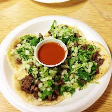
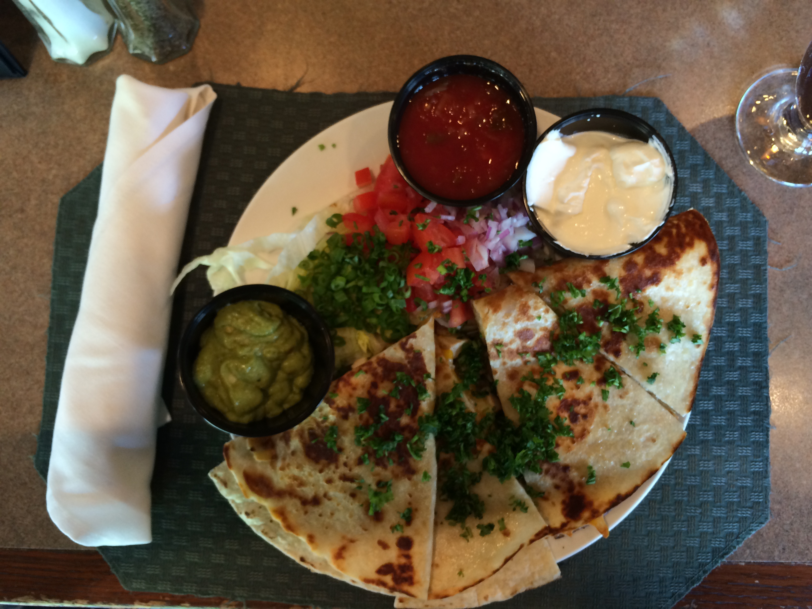
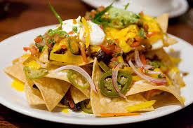

Tacos
One of my favorite restaurants I like to go to is in LA called El Taurino.
My go-to taco there is the el pastor taco. Although it's very spicy with the hot
sauce, I cannot get enough of it! I love tacos in general so whenever I go back
home to LA, one of the first things I crave are tacos.

Quesadilla
In this photo, after playing a round of golf, I normally like to go
into a restaurant and order a quesadilla because there's not much that
can go wrong with the choice. I love how simple yet tasty a quesadilla can be
as long as some effort is put in. This quesadilla in particular
was not only affordable but extremely appetizing!

Nachos
The interesting thing about nachos is that it's not so much a full meal
but a side-dish or an appetizer. Although I normally don't order a whole plate
of nachos for myself, when I do, I never regret the decision. I think it's a great
dish to eat when you're with a group of people; it just creates this friendly
environment and I especially love to eat nachos while watching a movie in a theater!
